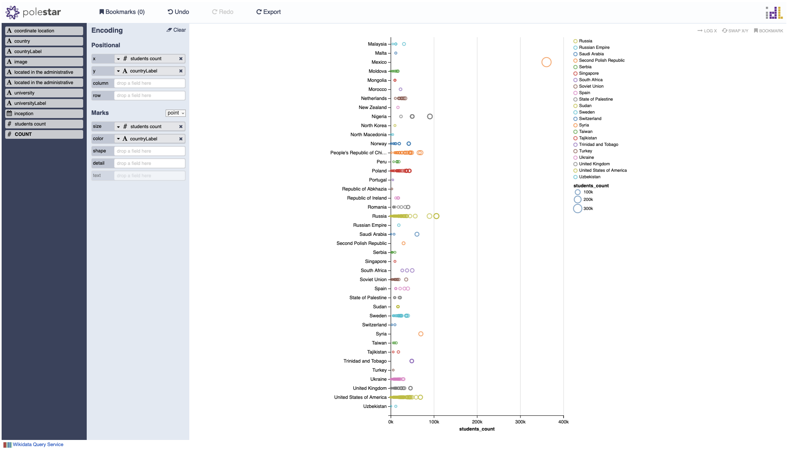

Thème : universités
La requête suivante retourne 1215 résultats à la date du 16 janvier 2023.
Code de la requête :
SELECT DISTINCT ?university ?universityLabel
?inception
?located_in_the_administrative_territorial_entity ?located_in_the_administrative_territorial_entityLabel
?country ?countryLabel ?coordinate_location ?students_count ?image
WHERE {
SERVICE wikibase:label { bd:serviceParam wikibase:language "[AUTO_LANGUAGE],en". }
?university wdt:P31 wd:Q3918.
?university wdt:P571 ?inception.
?university wdt:P131 ?located_in_the_administrative_territorial_entity.
?university wdt:P17 ?country.
?university wdt:P625 ?coordinate_location.
?university wdt:P2196 ?students_count.
?university wdt:P18 ?image.
}
La figure suivante montre les universités ayant le plus nombre d'étudiant.e.s inscrit.e.s. On voit que le Mexique, l'Egypte, la Russie, le Nigeria, les États-Unis et la Chine, figurent parmi les plus élevées.

Au survol de chaque point du graphique, on découvre le nom des universités :